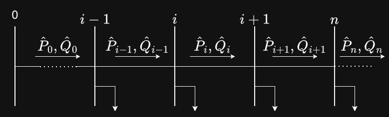

KVL derivation for three-phase unbalanced system
Introduction
In this document, I review two papers. The first papers introduces the derivation is for three-phase, balanced systems. The second derviation is for three-phase unbalanced systems.
First Paper: Network Reconfiguration in Distribution Systems for Loss Reduction and Demand Balancing, Baran et. al.
Paper’s Objectives
1- How can we change the network configuration to reduce resistive losses? 2- How can the load be distributed such that no overloads occur on the T-Lines?
Equations Derivation
NOTE: The paper uses DistFlow equations, which we are going to use in this work.
Consider the following single line diagram:

For each load, we consider \(P_{L_{n}}\) and \(Q_{L_{n}}\), indicating load power flow at each load.
Each line has an impedance, \(Z_{n} = r_{n}+jx_{n}\). The apparent power flow at each line is given by:
\[\bar{S_{n}} = P_{n}+jQ_{n}\]
For instance, at bus \(i+1:\) \[\bar{S}_{i+1} = P_{i+1}+jQ_{i+1}\]
I think it is easier to see this if we look at the power flow between two buses. Consider the power flow between buses 0 & \(i-1\):
\[\underbrace{\bar{P}_{0}}_{\text{Power leaving bus $0$}} = \underbrace{\bar{P}_{0, loss}}_{\text{Losses}} + \underbrace{\bar{P}_{i-1}}_{\text{Power entering bus $i-1$}} +\underbrace{\bar{P}_{i-1, load}}_{\text{Power consumed by bus $i-1$ load}} \tag{1}\]
Decomposing the Losses term in equation Equation 1
\[P_{losses} = r |I^{2}|\]
At any given bus \(n\):
\[P_{n,losses} = r_{n} |I^{2}_{n}| \tag{2}\]
Recall:
\[\bar{S} = \bar{I}^{*} \bar{V} = \bar{P}+j\bar{Q}\]
Wherein the magnitude of the apparent power is given by:
\[|S| = |I|~|V| = \sqrt{P^{2} + Q^{2}}\]
Squaring both sides:
\[|S|^{2} = |I|^{2}~|V|^{2} = P^{2}+Q^{2}\]
Solving for the current, \(I\):
\[|I|^{2} = \frac{P^{2} + Q^{2}}{|V|^{2}}\]
At any given bus \(n\), the current is:
\[|I_{n}|^{2} = \frac{P^{2}_{n} + Q^{2}_{n}}{|V_{n}|^{2}} \tag{3}\]
substituting the current equation Equation 3 into Equation 2 we get:
\[P_{n,losses} = r_{n} \frac{P^{2}_{n} + Q^{2}_{n}}{|V_{n}|^{2}} \tag{4}\]
Subtituting Equation 4 in the KCL between buses \(0\) and \(i-1\) in Equation 1, we get:
\[\underbrace{\bar{P}_{n}}_{\text{Power leaving bus $n$}} = \underbrace{r_{n} \frac{P^{2}_{n} + Q^{2}_{n}}{|V_{n}|^{2}}}_{\text{Losses}} + \underbrace{\bar{P}_{n+1}}_{\text{Power entering bus $n+1$}} +\underbrace{\bar{P}_{n+1, load}}_{\text{Power consumed by bus $n+1$ load}} \tag{5}\]
Equation 5 is the real power DistFlow Equation. This equation can be used for any power flow calculations.
Similarly, the reactive power can be calculated in a similar manner:
\[\underbrace{\bar{Q}_{n}}_{\text{Q leaving bus $n$}} = \underbrace{x_{n} \frac{P^{2}_{n} + Q^{2}_{n}}{|V_{n}|^{2}}}_{\text{Losses}} + \underbrace{\bar{Q}_{n+1}}_{\text{Q entering bus $n+1$}} +\underbrace{\bar{Q}_{n+1, load}}_{\text{Q consumed by bus $n+1$ load}} \tag{6}\]
Deriving the Voltage Equation:
Applying KVL to buses, \(i\) and \(i-1\) in Figure 1:
\[\bar{V}_{i-1} = \bar{Z}_{i-1}~\bar{I}_{i-1} + \bar{V}_{i} \tag{7}\]
The current complex value can be solved for in a similar manner as in equation Equation 3:
\[\bar{V}_{n}~\bar{I}_{n}^{*} = \bar{P}_{n}+{j\bar{Q}}_{n}\]
Solving for \(\bar{I}_{n}^{*}\):
\[\bar{I}_{n} = \frac{\bar{P}_{n}-j\bar{Q}_{n}}{\bar{V}_{n}^{*}} \tag{8}\]
Subtituting Equation 8 in Equation 7 & solving for \(\bar{V}_{i}\):
\[\bar{V}_{i} = \bar{V}_{i-1} - \bar{Z}_{i-1}~\bar{I}_{i-1} \tag{9}\]
\[\bar{V}_{i} = \bar{V}_{i-1} - \bar{Z}_{i-1}~\frac{\bar{P}_{i-1}-j\bar{Q}_{i-1}}{\bar{V}_{i-1}^{*}}\]
We can then extend this to get only the magnitude of the voltage:
Recall \(|a^{2} - b^{2}| = (a-b)(a^{*} - b^{*})\):
\[|V^{2}_{i}| = (\bar{V}_{i-1} - \bar{Z}_{i-1}~\bar{I}_{i-1})~(\bar{V}^{*}_{i-1} - \bar{Z}^{*}_{i-1}~\bar{I}^{*}_{i-1})\]
Multiplying both terms, we end up with:
\[|V^{2}_{i}| = |V^{2}_{i-1}| - 2~\Re \{\underbrace{\bar{V}^{*}_{i-1}~\bar{I}_{i-1}}_{\substack{\text{Apparent} \\ \text {Power} \\ \text{Conjugate}}}~\bar{Z}_{i-1}\} + |Z^{2}_{i-1}|~|I^{2}_{i-1}| \tag{10}\]
Recall \(\bar{S}^{*}_{i-1} = \bar{V}^{*}_{i-1}~\bar{I}_{i-1} = \bar{P}_{i-1} - j\bar{Q}_{i-1}\)
So the middle term can be decomposed such that:
\[\bar{V}^{*}_{i-1}~\bar{I}_{i-1}~\bar{Z}_{i-1} = (\bar{P}_{i-1} - j\bar{Q}_{i-1})(r_{i-1}+jx_{i-1})\]
Multiplying and obtaining only the real part because we are trying to calculate the magnitude:
\[\Re \{\bar{Z}_{i-1}~\bar{V}^{*}_{i-1}~\bar{I}_{i-1}\} = r_{i-1}~P_{i-1} + x_{i-1}~Q_{i-1} \tag{11}\]
The last term in Equation 10 can be simplified further. Recall that \(|Z^{2}_{i-1}| = r^{2}_{i-1} + x^{2}_{i-1}\) and \(|I^{2}_{i-1}| = \frac{P^{2}_{i-1}-Q^{2}_{i-1}}{|V_{i-1}^{2}|}\)
\[|Z^{2}_{i-1}|~|I^{2}_{i-1}| = (r^{2}_{i-1} + x^{2}_{i-1})~(\frac{P^{2}_{i-1}-Q^{2}_{i-1}}{|V_{i-1}^{2}|}) \tag{12}\]
Subtituting Equation 11 and Equation 12 in Equation 10:
\[|V^{2}_{i}| = |V^{2}_{i-1}| - 2(r_{i-1}~P_{i-1} + x_{i-1}~Q_{i-1})+(r^{2}_{i-1} + x^{2}_{i-1})~\frac{P^{2}_{i-1}-Q^{2}_{i-1}}{|V_{i-1}|^{2}} \tag{13}\]
Equation 13 is the Voltage Magnitude DistFlow Equation. This equation can be used for any \(n-bus\) power system.
Three-phase Unbalanced System
Using the same KVL we used before, Equation 9, we can set a system of equations for buses \(i\) and \(j\) such that:
\[ \begin{bmatrix} \bar{V}^{a}_{i} \\ \bar{V}^{b}_{i} \\ \bar{V}^{c}_{i} \end{bmatrix} = \begin{bmatrix} \bar{V}^{a}_{j} \\ \bar{V}^{b}_{j} \\ \bar{V}^{c}_{j} \end{bmatrix} - \begin{bmatrix} \bar{Z}^{aa}_{ij} & \bar{Z}^{ab}_{ij} & \bar{Z}^{ac}_{ij}\\ \bar{Z}^{ba}_{ij} & \bar{Z}^{ab}_{ij} & \bar{Z}^{bc}_{ij}\\ \bar{Z}^{ca}_{ij} & \bar{Z}^{cb}_{ij} & \bar{Z}^{cc}_{ij} \end{bmatrix} \begin{bmatrix} \bar{I}^{a}_{ij} \\ \bar{I}^{b}_{ij} \\ \bar{I}^{c}_{ij} \end{bmatrix} \]
For any given bus, the voltage equation can extracted from the above matrix form. For instance:
\[\bar{V}^{a}_{i} = \bar{V}^{a}_{j} - \bar{Z}_{aa}~\bar{I}^{a}_{ij} - \bar{Z}_{ab}~\bar{I}^{b}_{ij} - \bar{Z}_{ac}~\bar{I}^{c}_{ij}\]